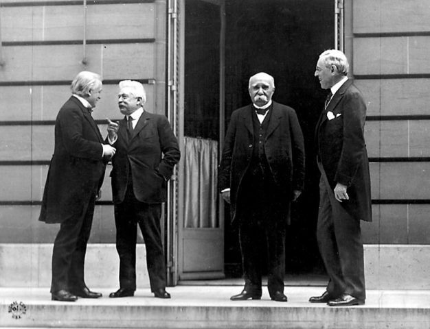
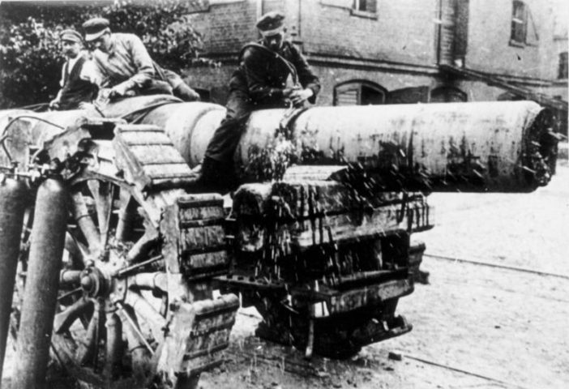

Сто лет назад, 28 июня 1919 года, был подписан Версальский договор, официально завершивший Первую мировую войну. Это важнейший результат Парижской мирной конференции, которая прошла после ее окончания в период с 18 января 1919 года по 21 января 1920 года. Осенью 1918 года союзники Германии — Болгария, Турция, распадавшаяся Австро-Венгрия — одна за другой стали заключать перемирия. После чего Германия заключила Компьенское перемирие в ноябре 1918 года. Итоговый документ был подписан странами Антанты с одной стороны (США, Япония, Британская империя, Франция, Италия) и Германией с другой. Хотя слово «капитуляция» нигде не употреблялось, но условия перемирия были такие жесткие, что многие сравнивали положения с ней.
Ожидание мира
От окончания Первой мировой войны люди в разных странах ждали совершенно разных вещей. Скажем, для Японии, которая сражалась на стороне Антанты, был важен Тихоокеанский регион — и Япония получила германские островные территории к северу от экватора и права на китайскую провинцию Шаньдун, которую ранее «арендовала» Германия. Италию же, имевшую амбиции стать великой державой, часто называли в это время «побежденной в лагере победителей»: экономически государство было истощено и сильно зависело от других союзников. С интересами Италии считались редко, что усугубляло политический кризис в стране.
Таким образом, договаривающимися сторонами были три: Великобритания, Франция и Соединенные Штаты Америки. У них были разные взгляды на судьбы мира и судьбу Германии в частности.
Позиция США
Изначально Соединенные Штаты Америки сохраняли нейтралитет во время войны. В 1916 году президент Вильсон был переизбран, потому как позиционировал себя как человека, удержавшего Соединенные Штаты от вступления в войну. Однако истории известны случаи, когда переизбранный президент обретает большую степень свободы. В 1917 году под влиянием разных факторов Соединенные Штаты Америки вступили в Первую мировую войну на стороне Антанты.
Вильсону было важно убедить и американский народ, и мировое общественное мнение, что война является справедливой, она ведется ради победы демократии и нового международного порядка. Эта идея была отражена в Четырнадцати пунктах Вильсона — принципах мирного договора, разработанных им. Дополнительным фактором, который заставлял думать в этом направлении, были дискуссии о мире без аннексий и контрибуций, которые выдвигала российская революция еще до принятия большевистского Декрета о мире. Эти идеи отразил Вильсон в форме, приемлемой для людей демократических взглядов. В частности, он пробуждал надежду на право народов на самоопределение. Так он приобрел большую популярность во всем мире. Это также позволяло Вильсону вести политическую мобилизацию на внутреннем фронте в Америке и ослаблять единство в Германии. Многие немцы начинали думать, что следует выходить из войны, и надеялись, что принципы демократического мира будут применены и к ним.
Хотя американский президент Вудро Вильсон подписал Версальский мирный договор, в Соединенных Штатах было негодование. Исход войны оказался не таким, как было обещано. В США росли изоляционистские настроения: люди хотели дистанцироваться от европейской политики. В результате Соединенные Штаты подписали договор, аналогичный Версальскому, но без положения о Лиге Наций (международной организации, целью которой является мирное урегулирование вопросов и разоружение), в которую Соединенные Штаты не вступали, хотя инициатором ее создания был сам Вильсон.
Позиция Франции и Великобритании
Франция — в большей степени — и Великобритания не разделяли интересы Штатов: они хотели сохранить свои колониальные империи. Формально соглашаясь с Вильсоном, они жестко лоббировали свои интересы и предлагали более жесткую позицию по отношению к Германии. В особенности это характерно для Франции, которая очень беспокоилась о том, как после войны будут складываться отношения с более населенной и экономически развитой страной. Франция, в частности, настаивала на том, чтобы Германия компенсировала ей все разрушения и экономические потери, вызванные войной: «Пусть немцы заплатят за все», — гласил лозунг, выдвинутый французскими влиятельными политиками.
Таким образом, одной из серьезных проблем для подписания договора стали разногласия в лагере победителей. Ведь ситуация в послевоенном мире была сложной и в экономическом отношении, и в социальном, и в политическом. Эпидемии в некоторых странах унесли значительно больше жизней, чем военные действия. И в такой непростой, нестабильной обстановке проходила Парижская мирная конференция. Не следует забывать, что в это же время шла гражданская война в России, которая затрагивала, так или иначе, и все близлежащие территории.
Условия Версальского мира для Германии
Договор был невыгодным для Германии, и многие считали, что подписывать его нельзя. Однако сделать это все же пришлось.
Три больших пункта касались непосредственно Германии. Во-первых, Германия теряла важные территории. За пределами Европы — колонии в Африке и Тихом океане, которые разделили Франция, Япония, Великобритания и ее доминионы. Если говорить о Европе, то часть территории отходила к Франции — Эльзас и Лотарингия. Саарский угольный бассейн должен был находиться под контролем Франции. Небольшая территория была передана Бельгии. Довольно значимые территории отошли к Польше. Литве отошел Мемель (по-литовски Клайпеда). Побежденная страна оказалась разрезана на две неравные части: от основной территории Германии отделялась Восточная Пруссия с Кенигсбергом. Город Данциг с преимущественно немецким населением был провозглашен вольным городом под контролем Лиги Наций. При этом вопрос часто решался силой оружия или давлением победивших держав. Немцы ощущали, что с ними поступили несправедливо.
Кроме того, запрещалось объединение Германии и Австрии. А в это время немецкоязычная Австрия стремилась объединиться с Германией. Сейчас нам кажется совершенно естественным, что существует независимая Австрия, особая австрийская идентичность. Но тогда для австрийцев речь шла о воссоединении с общей германской родиной. Поэтому когда в 1938 году Гитлер осуществил присоединение (аншлюс) Австрии, то значительная часть австрийцев разной политической направленности, не только нацисты, это приветствовали.
Во время конфликтов немцев с соседями на востоке и появились военизированные формирования. В Германии они получили название фрайкоров — свободных корпусов. Их создание способствовало появлению нацистского движения.
Вооруженные силы и репарации
Вдоль Рейна создавалась рейнская демилитаризованная зона — районы, где Германия не могла иметь вооруженные силы. Предполагалось, что так Франции будет обеспечена безопасность. Сама германская армия сокращалась, ее численность по условиям договора составляла 100 тысяч человек. Для большой страны это довольно мало. Кроме того, армия должна была строиться на постоянной основе. Это делалось для того, чтобы Германия не могла подготовить и переподготовить резервы. Германии не разрешалось иметь ряд видов вооружения: тяжелые военные корабли, подводные лодки, военную авиацию, танки, химическое оружие. Другие виды вооружения были строго ограничены. Также налагались ограничения на производство оружия на территории страны.
Третий важный пункт касался репараций. В ходе войны, отчасти под влиянием российской революции, идея контрибуций, то есть наложения штрафа на побежденную сторону, была отвергнута как антидемократическая. Поэтому на Германию наложили репарации: так как она объявлялась главным виновником войны (это было зафиксировано в Версальском мирном договоре), то она должна участвовать в восстановлении тех территорий, которые были разрушены в результате военных действий. Главным получателем репараций были Франция и в меньшей степени Бельгия. При этом Германия, подписывая договор, покупала кота в мешке: размер репараций не был еще определен. Как оказалось, размер предъявленных репараций был непосилен для Германии — в 1924 году пришлось установить новый порядок выплат, согласно плану Дауэсу.
Германия и подписание договора
Германия не могла не подписать договор: территории страны были оккупированы, значительные запасы оружия сданы. Ее сотрясал серьезный экономический и политический кризис. Когда союзники навязали аналогичный договор Турции, еще более жестокий, то он был расторгнут, потому что в Турции возникло очень мощное националистическое движение, возглавляемое Мустафой Кемалем Ататюрком, который вел вооруженную борьбу против греческой армии. Греки были частью Антанты, и несмотря на то, что их поддерживала Англия, они были разбиты турками. Так Турция заставила страны Антанты заключить иной договор на более выгодных для них условиях. Нужно сказать, что в некоторых ранних нацистских текстах проходит линия восхищения Мустафой Кемалем Ататюрком и тем, что он сделал. Но в 1919 году у Германии не было ресурсов для вооруженной борьбы.
Значение Версальского договора
Подписание Версальского договора оказало большое влияние на историю, в том числе долгосрочное. С одной стороны, были определены некоторые очень важные параметры существования мира между войнами. Была создана первая международная организация — Лига Наций. Ее опыт, положительный и отрицательный, был использован потом при создании Организации Объединенных Наций. В сущности же итоги Первой мировой войны нанесли серьезный удар не только побежденным, но и победителям. Великобритания, казалось бы, являлась одной из главных выигравших сторон, она получила важные немецкие бывшие колонии. Части территории бывшей Османской империи были де-факто включены в Британскую империю, как подмандатные территории Лиги Наций; такие территории, как современная Иордания, Ирак и Палестина, были переданы Англии. И конечно, никакой независимости им она не собиралась предоставлять долгое время. Выяснилось, что высокие принципы права наций на самоопределение не соблюдаются, и в Индии и Египте в 1919 году поднялись восстания. Египет и Индия были недовольны английским колониальным господством и мечтали о предоставлении независимости.
Если говорить о положительном влиянии Версальского мирного договора, то сама идея демократического мира продолжала жить. Многие события в исторической памяти различных государств зафиксированы Первой мировой войной и тем, как эта война окончилась. Для некоторых стран Первая мировая война является даже более масштабной, чем Вторая мировая война. Поведение определенных государств в годы Второй мировой войны отражает ход Первой мировой войны. Скажем, для французского общества это колоссальная травма. Их желание избежать войны любой ценой влияло на французских политиков накануне и в ходе Второй мировой войны. Нежелание Бельгии оказывать большое сопротивление Германии в годы Второй мировой войны отчасти связано с памятью о тех потерях, которые Бельгия понесла в годы Первой мировой войны. Гитлер же мобилизовывал немцев вплоть до 1945 года, произнося как заклинание: «1918 год не должен повториться никогда». И многие немцы считали, что хуже этого быть не может.